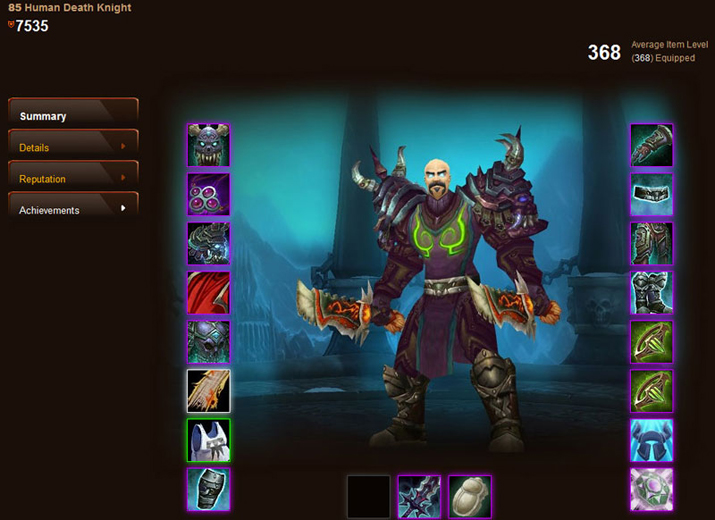
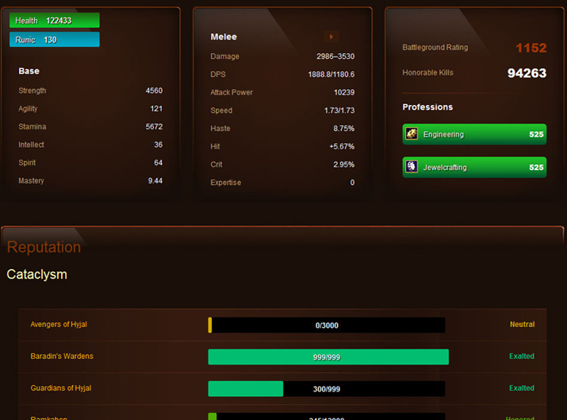

-

The goal of this site was to visualize a large complex data set in a way that would be familiar to the game's audience.
-

Here you can see the use of the jQuery Qtip plugin to dislay a large list of data when the user hovers over a character's item.
-

The grid based layout for this site is based of the 960.gs framework. Live examples of this guide are featured here.